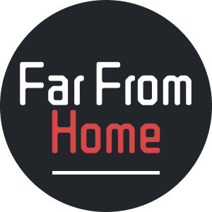
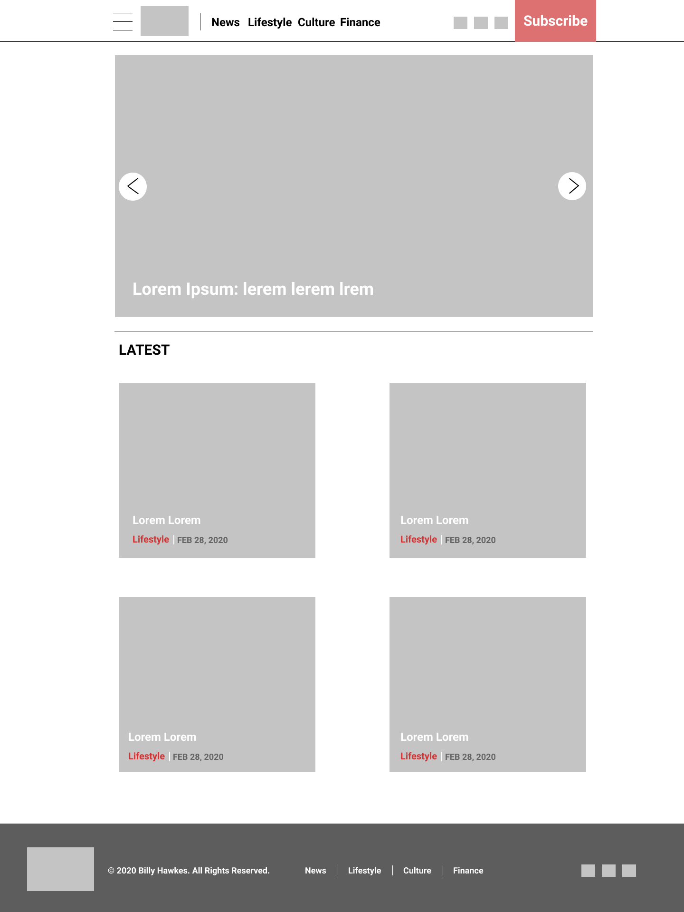
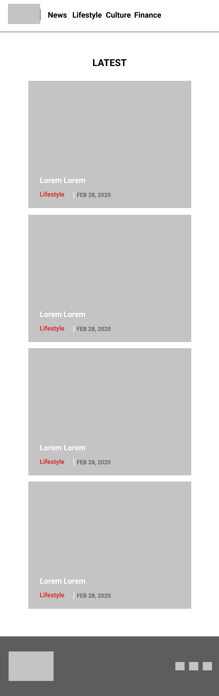

Billy Hawkes
Introduction
The site that I have chosen to make is named “Far From Home” and involves stories from across the world and beyond. It covers news, the environment, media and even finances. The structure is quite simple, intentionally. There is a folder of pages where each page is accessible from a main navbar and the footer nav navbar.
Inspiration
Three things inspired me while making my site. Now Magazine, an online site in the City of Toronto inspired design. Now Magazine has been a cornerstone magazine for young and hip Torontonians since the 1990s. It started out in print and is now online and available in print. It was a great inspiration for building and developing my design in Figma and actually building the site. I really liked layout features of the site such as having a latest section and categories in the navigation, although mine were just one page per category. Next is the name Far From Home. I had just watched the Spider Man movie funny enough and the name just popped into my head as a good magazine name, so I decided to build my site around the idea of the name, articles far from home. Lastly I tried to use topics I am interested in, and inspired by when creating my site. This helped me develop my articles and have fun doing it. My topic inspirations are further inspired by online videos, podcasts and photographers, all engaged in work that I am interested in.
Accessiblity
For accessibility, I used the alt attribute, semantic tags, and heading placement. These are all easy and effective ways to add great accessibility. The alt attribute on an img tag is a way for screen readers to understand what the image is in cases where the user might be visually impaired. Alt also helps if the image can’t be loaded as it shows what should have been there. Another accessibility feature was the semantic tags. I’ve been trying to get better at placing these tags, and I think it paid off. I have section, nav, header, footer, and more semantic tags. These give context to screen readers about the page and for keyboard-only navigation. Lastly we have heading placement which helps search engines access and index the structure of your page.
Usability
I considered usability with the responsive design, clarity, and functionality. Responsive design is a major part of any website and the mobile market keeps expanding. With this knowledge I put it into practice with media queries which allow you to change css based on screen size and responsive units. The clarity and ease of navigation is essential in building usable sites. I kept my site simple and familiar. You can see the top articles, and everything from the navbar to the carousel is familiar to users. Finally, with the functionality, every link has to do what it should, and everything is in its place. People aren’t confused by the design as it is consistent and usable.
Learning
During this project I learned a lot but the three areas of biggest learning relate to javascript, media queries, and building my first logo. I got to dig deeper into Javascript and get some hands on experience. I learned how to build a carousel, where I had to select dom elements and alter the styling from javascript. I also built a pseudo api where you can submit the subscribe form and it adds to a user list in another file. Next I learned about responsive design with media queries and putting them into practise since mobile design is so important in this age. Finally I learned about building logos in a software called figma. I thought it was really cool that I could build a logo from scratch for this site and I think it turned out great.
Evaluation l
Overall I think this site was a success. I am specifically proud of the carousel, layout and functionality. The carousel was very rewarding. I’ve never had to make anything like it but I definitely think it paid off as it makes the site feel more alive and adds to the magazine nature of the site. Next is the layout. I think the layout flows well and everything is accessible and familiar. Lastly it is very functional and resembles a real magazine site. I have social media links, a clean navigation system, a subscribe button for magazine memberships. This brings it closer to a real magazine and I think it was a success on that part.
Evaluation ll
While there are many things that I can be proud of and think went well, it’s important to focus on the things that could be improved to learn for the future. One of these things would be the overall styling of my site. I’m not a designer by any means, so looking at my site, I don’t know if it would pass as a real magazine. I tried my best but in the future I think it would be important to either have a designer so that I can focus on code, or learn some design principles to take a site like this to that next level, especially if it is a real site that people can view.
Resources
News Page:
Data(https://www.npr.org/2021/03/24/980708784/40-000-evacuated-at-least-2-dead-in-massive-australian-floods), Image(https://www.bbc.com/news/world-australia-56480092)
Entertainment:
Data(https://www.cnn.com/2021/03/26/world/netflix-irregulars-sherlock-holmes-hnk-spc-intl/index.html) Image(https://www.rogerebert.com/streaming/netflixs-the-irregulars-succumbs-to-some-pretty-regular-problems) Reviews(https://www.rottentomatoes.com/tv/the_irregulars, https://www.imdb.com/title/tt10893694/)
Finance:
Data(https://www.bbc.com/news/world-middle-east-56522178) Image(https://www.bbc.com/news/world-middle-east-56522178)
Nature:
Data(https://www.cnn.com/2021/03/26/weather/sea-level-rise-accelerating-east-coast/index.html) Image(https://climate.nasa.gov/news/3012/nasa-led-study-reveals-the-causes-of-sea-level-rise-since-1900/)Appendices (All Designs Built in Figma)
Logo
Home
Content Pages

Home (Mobile)
Content Pages (Mobile)
.png)
Site Map